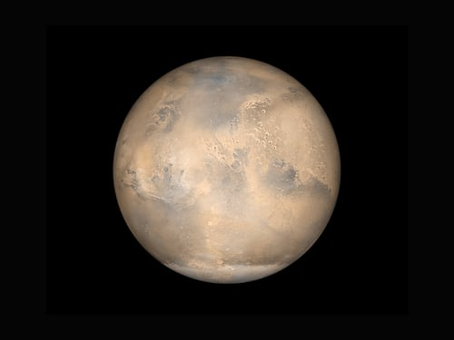
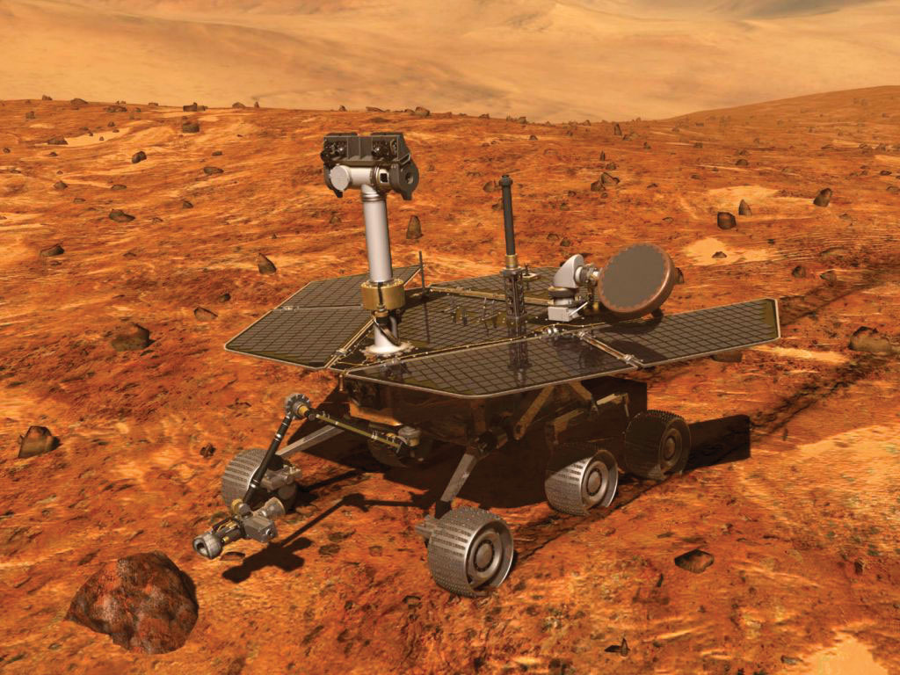
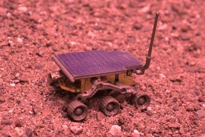
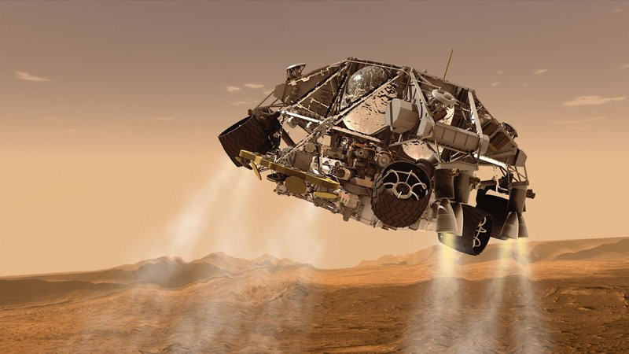

Rover Box Art
Perseverance touched down at Mars' Jezero Crater on February 18, 2021
The Rock Abrasion Tool is a grinding and brushing installation on NASA’s twin Mars Exploration Rovers, Spirit and Opportunity, which landed on Mars in January 2004.
Sojourner is a robotic Mars rover that landed on July 4, 1997, in the Ares Vallis region. The rover was the first wheeled vehicle to rove another planet, and was part of the Mars Pathfinder mission.
The parachute is jettisoned, along with the back shell, and eight retrorockets.
